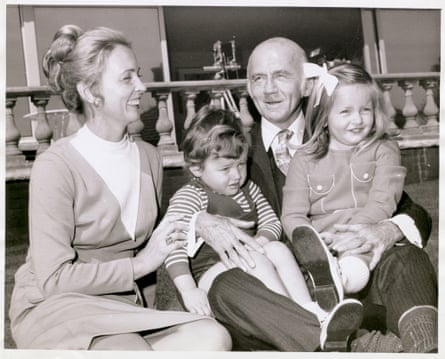
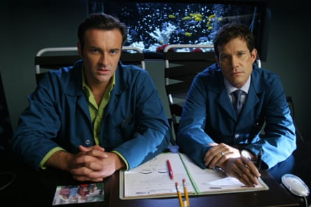

Julian McMahon, the Australian actor best known for his television roles in Charmed, Nip/Tuck and FBI: Most Wanted as well as Fantastic Four supervillain Dr Doom, has died aged 56.
The actor died in Clearwater, Florida on Wednesday. He had been diagnosed with cancer, which had not been publicly announced.
His wife Kelly Paniagua confirmed his death on Friday, calling McMahon her “beloved husband”.
“With an open heart, I wish to share with the world that my beloved husband, Julian McMahon, died peacefully this week after a valiant effort to overcome cancer,” she said in a statement to Deadline.
“Julian loved life. He loved his family. He loved his friends. He loved his work, and he loved his fans. His deepest wish was to bring joy into as many lives as possible.”
She added: “We ask for support during this time to allow our family to grieve in privacy. And we wish for all of those to whom Julian brought joy, to continue to find joy in life. We are grateful for the memories.”
Julian McMahon (second from left) with his father Sir William “Billy” McMahon, Australian prime minister from 1971-72, his mother Lady Sonia McMahon, and his sister Melinda.Photograph: Bettmann/Bettmann Archive
Born in Sydney in 1968, McMahon was the son of former Australian prime minister Sir William “Billy” McMahon. He began his career as a model in the 1980s before moving into acting, landing a role in the Australian soap Home and Away in 1990 and appearing in 150 episodes.
He made his feature film debut in the 1992 comedy Exchange Lifeguards, titled Wet and Wild Summer! in the US, alongside Elliott Gould, and quickly moved into US television, appearing in shows including Another World, Profiler and Will and Grace.
He gained wider recognition as the half human, half demon assassin Cole Turner in the hit supernatural series Charmed, appearing on the show between 2000 and 2003 and briefly returning in 2005.
Julian McMahon as Dr Christian Troy and Dylan Walsh as Dr Sean McNamara in Nip/Tuck.Photograph: Channel 4
He later appeared in Nip/Tuck, the racy FX medical drama created by Ryan Murphy, playing the arrogant plastic surgeon Dr Christian Troy. The show ran for six seasons from 2003 to 2010 and earned McMahon a Golden Globe nomination.
Becoming known for playing charming villains, McMahon played the Marvel supervillain Doctor Doom in 20th Century Fox’s Fantastic Four films in 2005 and 2007. He also voiced Doctor Doom in the 2005 Fantastic Four video game.
McMahon also portrayed Jess LaCroix, a special agent and team leader, in FBI: Most Wanted, appearing for three seasons before leaving the show.
Dick Wolf, the producer of FBI: Most Wanted, called McMahon’s death “shocking news” in a statement on Friday. “All of us at Wolf Entertainment are deeply saddened by Julian’s passing and our condolences go out to his entire family,” he added.
His most recent roles included playing the Australian prime minister Stephen Roos in Netflix’s comedy-mystery The Residence; Scally, the menacing surfer terrorising Nicolas Cage’s character in The Surfer; and the love interest Ray in The Supremes at Earl’s All-You-Can-Eat.
McMahon was married three times, including to Australian singer Dannii Minogue in 1994 and to actor Brooke Burns, with whom he has a daughter. His final marriage, to Paniagua, began in 2014.